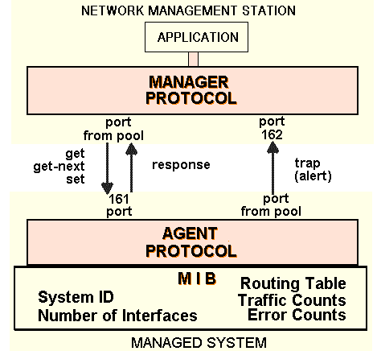

UDP
has been chosen and recommended for
SNMP
transport protocol. This is fine
because at the beginning, SNMP was targeted at managing Internet nodes and the
predominant Internet protocol suite
TCP/IP
. The choice of TCP/IP suite
continue to make sense because
IP
became the protocol for commercial backbone
networks. And users can count on a TCP/IP implementation available on any
type of host and
router
.
TCP
and
UDP
provide transport services. But UDP was preferred... This is due to
TCP characteristics, it is a complicate protocol and it consume to many memory
and CPU resources.
Where as UDP is easy to build and run. Into devices (repeaters and modems)
vendors have built simple version of IP and UDP. Thus the total software needed
is small and can be stored in a ROM. UDP is well suited to the brief
request /
response
message used in network management communication.
Use of UDP Port Numbers
UDP application port numbers are used to identify the origin and the
destination endpoints of a message. Most standard service operate out of
well-known ports, their port number are predefined so that their partner know
where they are. Many client application take a port number out of a pool of
available port numbers, and they let it free when they are done with it.

SNMP use of UDP port numbers.